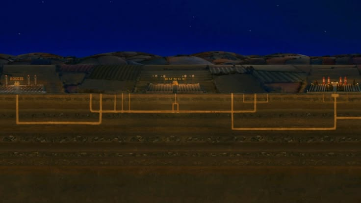

03 / 05
LOS
TÚNELES
Los animales comienzan a vivir bajo tierra mientras los granjeros intentan atraparlos.
En esta parte del recorrido la navegación también cambia. Ya no existe un único camino. Puedes decidir hacia dónde continuar.
